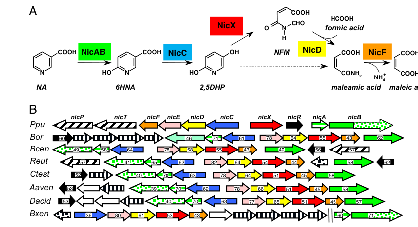

nicB encodes the large subunit of the membrane-associated NicAB nicotinate dehydrogenase. Together with NicA, it mediates conversion of nicotinate to 6-hydroxynicotinate in the first step of aerobic nicotinate degradation and carries molybdopterin/heme-associated electron-transfer functionality.
| GO Term | Evidence | Action | Reason |
|---|---|---|---|
|
GO:0009055
electron transfer activity
|
IEA
GO_REF:0000002 |
KEEP AS NON CORE |
Summary: Electron transfer is consistent with the NicB role in the NicAB electron-transfer chain, but the core annotation is the nicotinate dehydrogenase oxidoreductase reaction.
Reason: Retain as a non-core mechanistic feature.
Supporting Evidence:
file:PSEPK/nicB/nicB-uniprot.txt
electron transfer chain, possibly by delivering the electrons to a
file:PSEPK/nicB/nicB-deep-research-falcon.md
A **C-terminal cytochrome c (CytC) domain** containing **three heme-binding motifs** (Cys–X2–Cys–His-like CytC motifs), which is unusual among xanthine dehydrogenase family members and is proposed to participate in electron transfer to the terminal acceptor
|
|
GO:0016020
membrane
|
IEA
GO_REF:0000044 |
KEEP AS NON CORE |
Summary: Membrane localization is a UniProt sequence-based inference (ECO:0000305, single-pass membrane protein from one predicted transmembrane helix at 764-784), not an experimentally established subcellular location. Falcon deep research notes that direct experimental localization for NicB/NicAB has not been demonstrated. Retain as a non-core, inferred location rather than a confirmed core component.
Reason: Location is computationally inferred (ECO:0000305) and not experimentally confirmed; keep as non-core.
Supporting Evidence:
file:PSEPK/nicB/nicB-uniprot.txt
SUBCELLULAR LOCATION: Membrane
file:PSEPK/nicB/nicB-deep-research-falcon.md
Direct experimental localization (e.g., cytosolic vs periplasmic vs membrane-associated) for NicB/NicAB was **not provided** in the retrieved KT2440-focused excerpts
|
|
GO:0016491
oxidoreductase activity
|
IEA
GO_REF:0000002 |
MARK AS OVER ANNOTATED |
Summary: Generic oxidoreductase activity is less informative than GO:0016725 for this enzyme complex.
Reason: Prefer the more specific oxidoreductase term.
Supporting Evidence:
file:PSEPK/nicB/nicB-uniprot.txt
Reaction=2 Fe(III)-[cytochrome] + nicotinate + H2O = 2 Fe(II)-
|
|
GO:0020037
heme binding
|
IEA
GO_REF:0000002 |
KEEP AS NON CORE |
Summary: Heme binding is a plausible and supported cofactor feature for this large subunit, but it is ancillary to the catalytic role.
Reason: Retain as non-core cofactor binding.
Supporting Evidence:
file:PSEPK/nicB/nicB-uniprot.txt
electron transfer chain, possibly by delivering the electrons to a
file:PSEPK/nicB/nicB-deep-research-falcon.md
NicB carries the **Mo–pterin catalytic region** and a **C-terminal multi-heme cytochrome c domain**
|
|
GO:1901848
nicotinate catabolic process
|
IDA
PMID:18678916 Deciphering the genetic determinants for aerobic nicotinic a... |
ACCEPT |
Summary: NicB is a direct subunit of the enzyme initiating aerobic nicotinate degradation.
Reason: Retain the pathway annotation.
Supporting Evidence:
file:PSEPK/nicB/nicB-uniprot.txt
nicotinate hydroxylation, the first step in the aerobic nicotinate
file:PSEPK/nicB/nicB-uniprot.txt
PATHWAY: Cofactor degradation; nicotinate degradation.
file:PSEPK/nicB/nicB-deep-research-falcon.md
Disruption of **nicA** or **nicB** abolished growth on NA but did not prevent growth on 6HNA (indicating NicAB is needed for the NA→6HNA step specifically)
|
|
GO:0016725
oxidoreductase activity, acting on CH or CH2 groups
|
IDA
PMID:18678916 Deciphering the genetic determinants for aerobic nicotinic a... |
ACCEPT |
Summary: This term captures the oxidoreductase chemistry of the NicAB nicotinate hydroxylation reaction.
Reason: Retain as the best current MF term for NicB.
Supporting Evidence:
file:PSEPK/nicB/nicB-uniprot.txt
Subunit of the two-component enzyme NicAB that mediates
file:PSEPK/nicB/nicB-uniprot.txt
Reaction=2 Fe(III)-[cytochrome] + nicotinate + H2O = 2 Fe(II)-
file:PSEPK/nicB/nicB-deep-research-falcon.md
Activity is **O2-dependent** and coupled via the CytC domain to a KCN-sensitive terminal oxidase; **PMS** can serve as an artificial electron acceptor in vitro
|
Q: Does membrane association of NicB change the appropriate cellular-component annotation for the NicAB nicotinate dehydrogenase complex beyond the current generic membrane term?
Suggested experts: Bacterial nicotinate catabolism and GO cellular-component curators
Experiment: Fractionate cells expressing tagged NicA and NicB, then assay nicotinate dehydrogenase activity and cytochrome reduction in membrane and soluble fractions.
Type: subcellular fractionation with enzyme assay
The research report should be a detailed narrative explaining the function, biological processes, and localization of the gene product. Citations should be given for all claims.
You should prioritize authoritative reviews and primary scientific literature when conducting research. You can supplement
this with annotations you find in gene/protein databases, but these can be outdated or inaccurate.
We are specifically interested in the primary function of the gene - for enzymes, what reaction is catalyzed, and what is the substrate specificity? For transporters, what is the substrate? For structural proteins or adapters, what is the broader structural role? For signaling molecules, what is the role in the pathway.
We are interested in where in or outside the cell the gene product carries out its function.
We are also interested in the signaling or biochemical pathways in which the gene functions. We are less interested in broad pleiotropic effects, except where these elucidate the precise role.
Include evidence where possible. We are interested in both experimental evidence as well as inference from structure, evolution, or bioinformatic analysis. Precise studies should be prioritized over high-throughput, where available.
The P. putida KT2440 nicB gene is experimentally linked to aerobic nicotinic acid (NA; nicotinate) catabolism as the large subunit of a two-component nicotinic acid hydroxylase complex NicAB, which catalyzes the first committed step NA → 6-hydroxynicotinic acid (6HNA). This matches the UniProt identity given for Q88FX8 (“nicotinate dehydrogenase subunit B / large subunit”) and the expected xanthine dehydrogenase-family molybdenum hydroxylase modular architecture (jimenez2008decipheringthegenetic pages 2-3).
In P. putida KT2440, NicAB is a heterodimeric, two-component hydroxylase encoded by nicA and nicB. It initiates the “maleamate pathway” of aerobic NA degradation by converting nicotinic acid (NA) to 6-hydroxynicotinic acid (6HNA) (jimenez2008decipheringthegenetic pages 2-3, jimenez2008decipheringthegenetic pages 1-2).
A key mechanistic concept is that hydroxylation of N-heteroaromatic compounds in this enzyme class typically involves a molybdenum center coordinated by a pterin-based cofactor (here specified as molybdopterin cytosine dinucleotide, MCD) plus additional redox cofactors that support intramolecular electron transfer (jimenez2008decipheringthegenetic pages 2-3, mendel2024thefinalstep pages 2-4).
Jiménez et al. (2008; PNAS; published Aug 2008; URL https://doi.org/10.1073/pnas.0802273105) describe NicB (128 kDa) as a “large subunit” with:
- An N-terminal molybdenum-cofactor binding/catalytic region consistent with an MCD-binding molybdopterin architecture (MPT2–MPT1–MPT3 arrangement) (jimenez2008decipheringthegenetic pages 2-3).
- A C-terminal cytochrome c (CytC) domain containing three heme-binding motifs (Cys–X2–Cys–His-like CytC motifs), which is unusual among xanthine dehydrogenase family members and is proposed to participate in electron transfer to the terminal acceptor (jimenez2008decipheringthegenetic pages 2-3, jimenez2008decipheringthegenetic pages 3-4).
NicA (23.8 kDa) is described as the “small subunit” harboring conserved motifs consistent with binding two [2Fe–2S] clusters (jimenez2008decipheringthegenetic pages 2-3).
Recent reviews (2023–2024) summarize that prototypical xanthine oxidoreductase family enzymes are molybdoflavin enzymes combining a Mo–pterin cofactor with additional redox cofactors including FAD and two [2Fe–2S] clusters, arranged to support directed electron flow during catalysis (seychell2024thegoodand pages 1-4). Separately, recent historical/chemical syntheses of the molybdenum cofactor emphasize that Moco is built on molybdopterin (MPT) and that bacteria can carry nucleotide-modified forms (dinucleotide derivatives)—consistent with the MCD noted for NicB (mendel2024thefinalstep pages 2-4).
The KT2440 nic gene cluster supports the aerobic conversion of NA through the maleamate pathway. In the pathway outline provided in Jiménez et al. (2008), the roles are:
- NicAB: NA → 6HNA (initial hydroxylation) (jimenez2008decipheringthegenetic pages 2-3).
- NicC: 6HNA → 2,5-dihydroxypyridine (2,5DHP) (xiao2018finrregulatesexpression pages 3-4).
- NicX: 2,5DHP → N-formylmaleamic acid (ring cleavage) (xiao2018finrregulatesexpression pages 3-4, jimenez2008decipheringthegenetic pages 4-5).
Downstream steps (e.g., NicD, NicF, NicE) funnel carbon to central metabolism (maleate/fumarate), as depicted in the pathway schematic (jimenez2008decipheringthegenetic pages 2-3).
These results anchor nicB as essential for NA catabolism specifically at the first hydroxylation step.
NicAB catalyzes conversion of nicotinic acid (NA) to 6-hydroxynicotinic acid (6HNA), and the hydroxylase activity was reported as highly specific for NA (jimenez2008decipheringthegenetic pages 2-3).
Biochemical assays in crude extracts show NicAB hydroxylase activity is:
- Oxygen-dependent (undetectable anaerobically) (jimenez2008decipheringthegenetic pages 2-3).
- Strongly stimulated by adding phenazine methosulfate (PMS), an artificial electron acceptor (jimenez2008decipheringthegenetic pages 2-3).
Functional experiments support a model in which the C-terminal CytC domain of NicB mediates electron transfer from the internal redox centers to the terminal oxidant:
- A truncated NicAB lacking the NicB CytC domain lost activity; activity could be restored by supplying the CytC domain in trans or by using PMS (jimenez2008decipheringthegenetic pages 3-4).
- KCN inhibited activity under physiological conditions, consistent with involvement of a cytochrome c oxidase as the terminal oxidase, whereas PMS could bypass this inhibition (jimenez2008decipheringthegenetic pages 3-4).
Quantitative activity values reported for crude extract assays (units as reported: mol·min⁻¹·mg⁻¹) include:
- With O2: 1.48
- With PMS: 5.98
- With added CytC domain: 2.14
- Under anaerobic (-O2) conditions: not detected
(jimenez2008decipheringthegenetic pages 2-3, jimenez2008decipheringthegenetic media 49857ed9).
These results imply that, physiologically, NicAB likely couples substrate oxidation to oxygen reduction through a cytochrome c-linked electron transfer chain, rather than using soluble NAD(P)+ directly (jimenez2008decipheringthegenetic pages 3-4, jimenez2008decipheringthegenetic pages 2-3).
The nicotinic-acid degradation genes in KT2440 are organized as a nicTPFEDCXRAB cluster (Jiménez et al., 2008; URL https://doi.org/10.1073/pnas.0802273105) (jimenez2008decipheringthegenetic pages 1-2, jimenez2008decipheringthegenetic pages 2-3). Xiao et al. (2018; Applied and Environmental Microbiology; published Oct 2018; URL https://doi.org/10.1128/AEM.01210-18) further describe three NA-inducible operons:
- nicAB (promoter Pa, upstream of nicA)
- nicXR (promoter Px)
- nicCDEFTP (promoter Pc, upstream of nicC)
with additional NA-independent promoters upstream of some genes (e.g., nicS, nicT, nicR) (xiao2018finrregulatesexpression pages 3-4).
Xiao et al. report that the LysR-type regulator FinR positively regulates the nicC and nicX operons and cooperates with the NicR repressor system; critically, nicA and nicB transcript levels were reported as not differing between wild type and a finR deletion mutant under the tested conditions, consistent with FinR acting mainly on downstream steps (xiao2018finrregulatesexpression pages 2-3, xiao2018finrregulatesexpression pages 3-4).
Quantitative transcriptomics (RNA-seq) reported log2 fold changes (finR mutant vs wild type) for nic genes including:
- nicC: 3.601
- nicX: 2.474
and additional changes for other nic-pathway genes (e.g., nicT, nicF, nicE, nicD) (xiao2018finrregulatesexpression pages 3-4).
FinR deletion caused impaired NA/6HNA utilization, described as a noticeably longer growth delay in minimal media with NA or 6HNA as sole carbon source (with controls to mitigate confounding growth effects from altered fpr-1) (xiao2018finrregulatesexpression pages 3-4).
Direct experimental localization (e.g., cytosolic vs periplasmic vs membrane-associated) for NicB/NicAB was not provided in the retrieved KT2440-focused excerpts. However, the requirement for a cytochrome c domain in NicB and the sensitivity to KCN are consistent with coupling to a respiratory electron transfer component (a cytochrome c oxidase) under aerobic conditions (jimenez2008decipheringthegenetic pages 3-4, jimenez2008decipheringthegenetic pages 2-3). This supports a model where NicAB function is integrated with cellular electron transfer, though the precise cellular compartment for catalysis remains to be confirmed experimentally from the available text (jimenez2008decipheringthegenetic pages 3-4, jimenez2008decipheringthegenetic pages 2-3).
No KT2440 NicB/NicAB-specific primary studies from 2023–2024 were retrieved in the current searches; nonetheless, multiple authoritative 2023–2024 sources refine mechanistic context for interpreting NicB’s domain/cofactor architecture:
Cofactor set and electron relay logic: A 2024 review on xanthine oxidoreductase emphasizes that the canonical family uses a Mo–pterin cofactor + FAD + two [2Fe–2S] clusters, and that these cofactors are structurally arranged to support directional electron flow during catalysis (Seychell et al., Feb 2024; URL https://doi.org/10.5772/intechopen.112498) (seychell2024thegoodand pages 1-4). This is consistent with NicA bearing Fe–S motifs and NicB providing the Mo–pterin catalytic site, while NicB’s unique CytC domain supplies an additional ET module (jimenez2008decipheringthegenetic pages 2-3).
Molybdenum cofactor chemistry and bacterial dinucleotide derivatives: Mendel & Oliphant’s 2024 review of Moco biosynthesis summarizes that Moco is based on molybdopterin (MPT) and that in bacteria the cofactor can occur as a dinucleotide derivative, aligning with the MCD assignment for NicB (Mendel & Oliphant, Sep 2024; URL https://doi.org/10.3390/molecules29184458) (mendel2024thefinalstep pages 2-4).
Redox cycling and hydroxylation mechanism: A 2024 review emphasizes the Mo center’s role in hydroxylation and Mo(IV/VI) cycling in molybdenum enzymes, reinforcing why Moco/MCD availability is decisive for NicB activity (Adamus et al., Jul 2024; URL https://doi.org/10.3390/biom14070869) (adamus2024molybdenum’sroleas pages 1-2).
Systems-level view of cofactor maturation: A 2023 review on molybdate/Moco handling highlights the existence of distinct Mo-enzyme families and outlines cofactor maturation logic (e.g., sulfurated mono-oxo forms in XO-family enzymes), which is relevant background when interpreting why heterologous hosts lacking proper cofactor maturation can fail to express activity (Weber et al., Dec 2023; URL https://doi.org/10.3390/molecules29010040) (weber2023themechanismsof pages 3-5). In the KT2440 NicAB case, Jiménez et al. explicitly attribute lack of activity in E. coli to inability to synthesize the relevant cofactor (MCD) (jimenez2008decipheringthegenetic pages 2-3).
A practical implementation arising directly from the KT2440 work is that a plasmid carrying the nic cluster (14 kb) can confer growth on NA to other bacteria, and a plasmid carrying nicAB can confer efficient NA → 6HNA conversion to Pseudomonas hosts that cannot otherwise oxidize NA (jimenez2008decipheringthegenetic pages 2-3). This provides a concrete route to engineer nicotinate bioconversion capabilities (e.g., producing 6HNA or enabling NA utilization) in heterologous Pseudomonas strains (jimenez2008decipheringthegenetic pages 2-3).
Because P. putida is a widely used chassis organism for bioremediation and metabolic engineering, experimentally defined catabolic modules like the nic cluster provide well-bounded genetic parts (operons/transporters/enzymes) for expanding substrate range to N-heteroaromatics. The KT2440 studies provide essential enabling information: the minimal initiating enzyme module (nicAB) and the necessity of correct Mo–pterin cofactor availability (jimenez2008decipheringthegenetic pages 2-3).
Key figures supporting pathway context and enzyme architecture/activity were retrieved from Jiménez et al. (2008):
- Nic cluster organization and NA degradation pathway schematic (jimenez2008decipheringthegenetic media 464cd9e8).
- NicAB activity table and domain architecture schematic (jimenez2008decipheringthegenetic media 49857ed9).
| Component | Size | Key cofactors/domains/motifs | Role in reaction | Electron acceptor / ET chain | Key experimental evidence |
|---|---|---|---|---|---|
| NicA | 23.8 kDa | Small subunit with two conserved [2Fe-2S]-binding motif regions: 41-C-X4-C-G-X-C-Xn-C-59 and 100-C-G-X-C-X31-C-X-C-137 (jimenez2008decipheringthegenetic pages 2-3) |
Part of the two-component nicotinate hydroxylase NicAB that catalyzes the first step of aerobic nicotinic acid (NA) degradation: NA → 6-hydroxynicotinic acid (6HNA) (jimenez2008decipheringthegenetic pages 2-3, jimenez2008decipheringthegenetic pages 1-2, xiao2018finrregulatesexpression pages 3-4) | Electrons are transferred through the NicAB redox chain to a terminal acceptor; physiological transfer is proposed to proceed to O2 via the NicB cytochrome c region / cytochrome c oxidase, while PMS can substitute in vitro (jimenez2008decipheringthegenetic pages 3-4, jimenez2008decipheringthegenetic pages 2-3) | Disruption of nicA abolishes growth on NA but not on 6HNA; nicAB expression in non-NA-oxidizing Pseudomonas strains confers stoichiometric NA → 6HNA conversion; nicAB belongs to the NA-inducible nicAB operon under promoter Pa (jimenez2008decipheringthegenetic pages 2-3, jimenez2008decipheringthegenetic pages 1-2, xiao2018finrregulatesexpression pages 3-4) |
| NicB (UniProt Q88FX8; nicB/ndhL; PP_3948) | 128 kDa | Large subunit; N-terminal molybdopterin cytosine dinucleotide (MCD)-binding catalytic architecture with MPT2-MPT1-MPT3 arrangement; C-terminal cytochrome c domain with three heme-binding motifs 817-CAVCH-823, 963-CTACH-969, 1087-CLGCH-1093 (jimenez2008decipheringthegenetic pages 2-3, jimenez2008decipheringthegenetic pages 5-6) |
Catalytic large subunit of NicAB; houses the molybdenum/MCD-dependent hydroxylation machinery for NA → 6HNA and a fused electron-transfer cytochrome c region (jimenez2008decipheringthegenetic pages 2-3, jimenez2008decipheringthegenetic pages 5-6) | Proposed intramolecular transfer from the NicAB redox center through the NicB cytochrome c domain to a cytochrome c oxidase using molecular oxygen as terminal acceptor; KCN inhibits activity, antimycin A has little effect with O2, and PMS bypasses physiological ET; a truncated NicB lacking the CytC region loses activity, restored partly by added CytC domain in trans (jimenez2008decipheringthegenetic pages 3-4, jimenez2008decipheringthegenetic pages 2-3) | nicB disruption abolishes growth on NA but not on 6HNA; complementation with the full nic cluster restores growth; pNicAB transfers NA-hydroxylating capacity to other Pseudomonas strains; crude-extract NicAB activity: +O2 = 1.48, +PMS = 5.98, +CytCdomain = 2.14 mol·min⁻¹·mg⁻¹; no detectable activity anaerobically; activity maximal at 30°C and pH 7.5; highly specific for NA; in 2018 RT-qPCR/promoter assays, nicB itself showed no significant FinR dependence while downstream nicC/nicX operons were FinR-activated (jimenez2008decipheringthegenetic pages 2-3, jimenez2008decipheringthegenetic pages 3-4, jimenez2008decipheringthegenetic pages 1-2, xiao2018finrregulatesexpression pages 2-3, xiao2018finrregulatesexpression pages 3-4) |
| NicAB complex | Heterodimeric 2-component enzyme (NicA + NicB) | Xanthine dehydrogenase-family/molybdohydroxylase-like system combining [2Fe-2S] centers (NicA), MCD-dependent catalytic region (NicB), and fused cytochrome c electron-transfer domain (NicB) (jimenez2008decipheringthegenetic pages 2-3, jimenez2008decipheringthegenetic pages 3-4, jimenez2008decipheringthegenetic media 464cd9e8) | Initiates the maleamate pathway of aerobic NA catabolism in P. putida KT2440 by hydroxylating nicotinic acid to 6HNA (jimenez2008decipheringthegenetic pages 1-2, jimenez2008decipheringthegenetic pages 2-3, xiao2018finrregulatesexpression pages 3-4) | Oxygen-dependent under physiological conditions; authors propose NicAB is the first xanthine dehydrogenase-family enzyme whose ET chain to molecular oxygen includes a cytochrome c domain; PMS acts as an artificial acceptor in vitro (jimenez2008decipheringthegenetic pages 3-4, jimenez2008decipheringthegenetic pages 1-2, jimenez2008decipheringthegenetic pages 2-3) | NA-grown cells depend on nicAB for growth on NA; growth restored by complementation with pNIC; pNicAB is sufficient for NA → 6HNA conversion in heterologous Pseudomonas hosts; activity abolished in NicABtr and rescued partially by CytC domain in trans or PMS; nicAB is one of three NA-inducible operons in the nic cluster (nicAB, nicXR, nicCDEFTP) (jimenez2008decipheringthegenetic pages 2-3, jimenez2008decipheringthegenetic pages 3-4, xiao2018finrregulatesexpression pages 3-4, jimenez2008decipheringthegenetic pages 1-2) |
Table: This table summarizes the experimentally supported functional annotation of NicB and the NicAB nicotinate hydroxylase in Pseudomonas putida KT2440. It highlights subunit architecture, cofactors, reaction role, electron transfer features, and the strongest genetic and biochemical evidence from the cited studies.
References
(jimenez2008decipheringthegenetic pages 2-3): José I. Jiménez, Ángeles Canales, Jesús Jiménez-Barbero, Krzysztof Ginalski, Leszek Rychlewski, José L. García, and Eduardo Díaz. Deciphering the genetic determinants for aerobic nicotinic acid degradation: the nic cluster from pseudomonas putida kt2440. Proceedings of the National Academy of Sciences, 105:11329-11334, Aug 2008. URL: https://doi.org/10.1073/pnas.0802273105, doi:10.1073/pnas.0802273105. This article has 173 citations and is from a highest quality peer-reviewed journal.
(jimenez2008decipheringthegenetic pages 1-2): José I. Jiménez, Ángeles Canales, Jesús Jiménez-Barbero, Krzysztof Ginalski, Leszek Rychlewski, José L. García, and Eduardo Díaz. Deciphering the genetic determinants for aerobic nicotinic acid degradation: the nic cluster from pseudomonas putida kt2440. Proceedings of the National Academy of Sciences, 105:11329-11334, Aug 2008. URL: https://doi.org/10.1073/pnas.0802273105, doi:10.1073/pnas.0802273105. This article has 173 citations and is from a highest quality peer-reviewed journal.
(mendel2024thefinalstep pages 2-4): Ralf R. Mendel and Kevin D. Oliphant. The final step in molybdenum cofactor biosynthesis—a historical view. Molecules, 29:4458, Sep 2024. URL: https://doi.org/10.3390/molecules29184458, doi:10.3390/molecules29184458. This article has 8 citations.
(jimenez2008decipheringthegenetic pages 3-4): José I. Jiménez, Ángeles Canales, Jesús Jiménez-Barbero, Krzysztof Ginalski, Leszek Rychlewski, José L. García, and Eduardo Díaz. Deciphering the genetic determinants for aerobic nicotinic acid degradation: the nic cluster from pseudomonas putida kt2440. Proceedings of the National Academy of Sciences, 105:11329-11334, Aug 2008. URL: https://doi.org/10.1073/pnas.0802273105, doi:10.1073/pnas.0802273105. This article has 173 citations and is from a highest quality peer-reviewed journal.
(seychell2024thegoodand pages 1-4): Brandon Charles Seychell, Marita Vella, Gary James Hunter, and Thérèse Hunter. The good and the bad: the bifunctional enzyme xanthine oxidoreductase in the production of reactive oxygen species. Biochemistry, Feb 2024. URL: https://doi.org/10.5772/intechopen.112498, doi:10.5772/intechopen.112498. This article has 5 citations and is from a peer-reviewed journal.
(xiao2018finrregulatesexpression pages 3-4): Yujie Xiao, Wenjing Zhu, Huizhong Liu, Hailing Nie, Wenli Chen, and Qiaoyun Huang. Finr regulates expression of nicc and nicx operons, involved in nicotinic acid degradation in pseudomonas putida kt2440. Applied and Environmental Microbiology, Oct 2018. URL: https://doi.org/10.1128/aem.01210-18, doi:10.1128/aem.01210-18. This article has 10 citations and is from a peer-reviewed journal.
(jimenez2008decipheringthegenetic pages 4-5): José I. Jiménez, Ángeles Canales, Jesús Jiménez-Barbero, Krzysztof Ginalski, Leszek Rychlewski, José L. García, and Eduardo Díaz. Deciphering the genetic determinants for aerobic nicotinic acid degradation: the nic cluster from pseudomonas putida kt2440. Proceedings of the National Academy of Sciences, 105:11329-11334, Aug 2008. URL: https://doi.org/10.1073/pnas.0802273105, doi:10.1073/pnas.0802273105. This article has 173 citations and is from a highest quality peer-reviewed journal.
(jimenez2008decipheringthegenetic media 49857ed9): José I. Jiménez, Ángeles Canales, Jesús Jiménez-Barbero, Krzysztof Ginalski, Leszek Rychlewski, José L. García, and Eduardo Díaz. Deciphering the genetic determinants for aerobic nicotinic acid degradation: the nic cluster from pseudomonas putida kt2440. Proceedings of the National Academy of Sciences, 105:11329-11334, Aug 2008. URL: https://doi.org/10.1073/pnas.0802273105, doi:10.1073/pnas.0802273105. This article has 173 citations and is from a highest quality peer-reviewed journal.
(xiao2018finrregulatesexpression pages 2-3): Yujie Xiao, Wenjing Zhu, Huizhong Liu, Hailing Nie, Wenli Chen, and Qiaoyun Huang. Finr regulates expression of nicc and nicx operons, involved in nicotinic acid degradation in pseudomonas putida kt2440. Applied and Environmental Microbiology, Oct 2018. URL: https://doi.org/10.1128/aem.01210-18, doi:10.1128/aem.01210-18. This article has 10 citations and is from a peer-reviewed journal.
(adamus2024molybdenum’sroleas pages 1-2): Jakub Piotr Adamus, Anna Ruszczyńska, and Aleksandra Wyczałkowska-Tomasik. Molybdenum’s role as an essential element in enzymes catabolizing redox reactions: a review. Biomolecules, 14:869, Jul 2024. URL: https://doi.org/10.3390/biom14070869, doi:10.3390/biom14070869. This article has 56 citations.
(weber2023themechanismsof pages 3-5): Jan-Niklas Weber, Rieke Minner-Meinen, and David Kaufholdt. The mechanisms of molybdate distribution and homeostasis with special focus on the model plant arabidopsis thaliana. Molecules, Dec 2023. URL: https://doi.org/10.3390/molecules29010040, doi:10.3390/molecules29010040. This article has 11 citations.
(jimenez2008decipheringthegenetic media 464cd9e8): José I. Jiménez, Ángeles Canales, Jesús Jiménez-Barbero, Krzysztof Ginalski, Leszek Rychlewski, José L. García, and Eduardo Díaz. Deciphering the genetic determinants for aerobic nicotinic acid degradation: the nic cluster from pseudomonas putida kt2440. Proceedings of the National Academy of Sciences, 105:11329-11334, Aug 2008. URL: https://doi.org/10.1073/pnas.0802273105, doi:10.1073/pnas.0802273105. This article has 173 citations and is from a highest quality peer-reviewed journal.
(jimenez2008decipheringthegenetic pages 5-6): José I. Jiménez, Ángeles Canales, Jesús Jiménez-Barbero, Krzysztof Ginalski, Leszek Rychlewski, José L. García, and Eduardo Díaz. Deciphering the genetic determinants for aerobic nicotinic acid degradation: the nic cluster from pseudomonas putida kt2440. Proceedings of the National Academy of Sciences, 105:11329-11334, Aug 2008. URL: https://doi.org/10.1073/pnas.0802273105, doi:10.1073/pnas.0802273105. This article has 173 citations and is from a highest quality peer-reviewed journal.

id: Q88FX8
gene_symbol: nicB
product_type: PROTEIN
status: DRAFT
taxon:
id: NCBITaxon:160488
label: Pseudomonas putida (strain ATCC 47054 / DSM 6125 / CFBP 8728 / NCIMB 11950 / KT2440)
description: nicB encodes the large subunit of the membrane-associated NicAB nicotinate dehydrogenase.
Together with NicA, it mediates conversion of nicotinate to 6-hydroxynicotinate in the first
step of aerobic nicotinate degradation and carries molybdopterin/heme-associated electron-transfer
functionality.
existing_annotations:
- term:
id: GO:0009055
label: electron transfer activity
evidence_type: IEA
original_reference_id: GO_REF:0000002
review:
summary: Electron transfer is consistent with the NicB role in the NicAB electron-transfer
chain, but the core annotation is the nicotinate dehydrogenase oxidoreductase reaction.
action: KEEP_AS_NON_CORE
reason: Retain as a non-core mechanistic feature.
supported_by:
- reference_id: file:PSEPK/nicB/nicB-uniprot.txt
supporting_text: electron transfer chain, possibly by delivering the electrons to a
- reference_id: file:PSEPK/nicB/nicB-deep-research-falcon.md
supporting_text: A **C-terminal cytochrome c (CytC) domain** containing **three
heme-binding motifs** (Cys–X2–Cys–His-like CytC motifs), which is unusual among
xanthine dehydrogenase family members and is proposed to participate in electron
transfer to the terminal acceptor
reference_section_type: OTHER
- term:
id: GO:0016020
label: membrane
evidence_type: IEA
original_reference_id: GO_REF:0000044
review:
summary: Membrane localization is a UniProt sequence-based inference (ECO:0000305,
single-pass membrane protein from one predicted transmembrane helix at 764-784),
not an experimentally established subcellular location. Falcon deep research notes
that direct experimental localization for NicB/NicAB has not been demonstrated.
Retain as a non-core, inferred location rather than a confirmed core component.
action: KEEP_AS_NON_CORE
reason: Location is computationally inferred (ECO:0000305) and not experimentally
confirmed; keep as non-core.
supported_by:
- reference_id: file:PSEPK/nicB/nicB-uniprot.txt
supporting_text: 'SUBCELLULAR LOCATION: Membrane'
- reference_id: file:PSEPK/nicB/nicB-deep-research-falcon.md
supporting_text: Direct experimental localization (e.g., cytosolic vs periplasmic
vs membrane-associated) for NicB/NicAB was **not provided** in the retrieved
KT2440-focused excerpts
reference_section_type: OTHER
- term:
id: GO:0016491
label: oxidoreductase activity
evidence_type: IEA
original_reference_id: GO_REF:0000002
review:
summary: Generic oxidoreductase activity is less informative than GO:0016725 for this
enzyme complex.
action: MARK_AS_OVER_ANNOTATED
reason: Prefer the more specific oxidoreductase term.
supported_by:
- reference_id: file:PSEPK/nicB/nicB-uniprot.txt
supporting_text: Reaction=2 Fe(III)-[cytochrome] + nicotinate + H2O = 2 Fe(II)-
- term:
id: GO:0020037
label: heme binding
evidence_type: IEA
original_reference_id: GO_REF:0000002
review:
summary: Heme binding is a plausible and supported cofactor feature for this large subunit,
but it is ancillary to the catalytic role.
action: KEEP_AS_NON_CORE
reason: Retain as non-core cofactor binding.
supported_by:
- reference_id: file:PSEPK/nicB/nicB-uniprot.txt
supporting_text: electron transfer chain, possibly by delivering the electrons to a
- reference_id: file:PSEPK/nicB/nicB-deep-research-falcon.md
supporting_text: NicB carries the **Mo–pterin catalytic region** and a **C-terminal
multi-heme cytochrome c domain**
reference_section_type: OTHER
- term:
id: GO:1901848
label: nicotinate catabolic process
evidence_type: IDA
original_reference_id: PMID:18678916
review:
summary: NicB is a direct subunit of the enzyme initiating aerobic nicotinate degradation.
action: ACCEPT
reason: Retain the pathway annotation.
supported_by:
- reference_id: file:PSEPK/nicB/nicB-uniprot.txt
supporting_text: nicotinate hydroxylation, the first step in the aerobic nicotinate
- reference_id: file:PSEPK/nicB/nicB-uniprot.txt
supporting_text: 'PATHWAY: Cofactor degradation; nicotinate degradation.'
- reference_id: file:PSEPK/nicB/nicB-deep-research-falcon.md
supporting_text: Disruption of **nicA** or **nicB** abolished growth on NA but did
not prevent growth on 6HNA (indicating NicAB is needed for the NA→6HNA step
specifically)
reference_section_type: OTHER
- term:
id: GO:0016725
label: oxidoreductase activity, acting on CH or CH2 groups
evidence_type: IDA
original_reference_id: PMID:18678916
review:
summary: This term captures the oxidoreductase chemistry of the NicAB nicotinate hydroxylation
reaction.
action: ACCEPT
reason: Retain as the best current MF term for NicB.
supported_by:
- reference_id: file:PSEPK/nicB/nicB-uniprot.txt
supporting_text: Subunit of the two-component enzyme NicAB that mediates
- reference_id: file:PSEPK/nicB/nicB-uniprot.txt
supporting_text: Reaction=2 Fe(III)-[cytochrome] + nicotinate + H2O = 2 Fe(II)-
- reference_id: file:PSEPK/nicB/nicB-deep-research-falcon.md
supporting_text: Activity is **O2-dependent** and coupled via the CytC domain to
a KCN-sensitive terminal oxidase; **PMS** can serve as an artificial electron
acceptor in vitro
reference_section_type: OTHER
references:
- id: GO_REF:0000002
title: Gene Ontology annotation through association of InterPro records with GO terms.
findings:
- statement: InterPro2GO supplies domain/family-based automated annotations that require
review against the gene-specific UniProt and literature context.
- id: file:PSEPK/nicB/nicB-uniprot.txt
title: UniProtKB reviewed entry for nicB
findings:
- statement: UniProt identifies NicB as the large subunit of NicAB nicotinate dehydrogenase,
with membrane localization and nicotinate-catabolic pathway placement.
- id: GO_REF:0000044
title: Gene Ontology annotation based on UniProtKB/Swiss-Prot Subcellular Location vocabulary
mapping.
findings:
- statement: UniProt subcellular-location mapping provides automated component annotations
based on reviewed-entry location vocabulary.
- id: PMID:18678916
title: 'Deciphering the genetic determinants for aerobic nicotinic acid degradation: the
nic cluster from Pseudomonas putida KT2440.'
findings:
- statement: The nic cluster paper identified NicAB as catalyzing nicotinate hydroxylation
in aerobic nicotinic acid degradation.
- id: PMID:19118407
title: Cloning, heterologous expression, and functional characterization of the nicotinate
dehydrogenase gene from Pseudomonas putida KT2440.
findings:
- statement: Additional biochemical work supports NicAB nicotinate dehydrogenase activity.
- id: file:PSEPK/nicB/nicB-deep-research-falcon.md
title: Falcon (Edison Scientific) deep research report for nicB (Q88FX8), Pseudomonas
putida KT2440
findings:
- supporting_text: 'NicB is the **molybdopterin (MCD)-binding large subunit** of **NicAB
nicotinic acid hydroxylase**, catalyzing the first step in aerobic nicotinate
degradation: **nicotinic acid → 6-hydroxynicotinic acid**'
reference_section_type: OTHER
- supporting_text: A **C-terminal cytochrome c (CytC) domain** containing **three heme-binding
motifs** (Cys–X2–Cys–His-like CytC motifs), which is unusual among xanthine dehydrogenase
family members and is proposed to participate in electron transfer to the terminal
acceptor
reference_section_type: OTHER
- supporting_text: 'Activity is **O2-dependent** and coupled via the CytC domain to
a KCN-sensitive terminal oxidase; **PMS** can serve as an artificial electron acceptor
in vitro'
reference_section_type: OTHER
- supporting_text: A **truncated NicAB** lacking the NicB CytC domain lost activity;
activity could be restored by supplying the CytC domain **in trans** or by using
**PMS**
reference_section_type: OTHER
- supporting_text: Disruption of **nicA** or **nicB** abolished growth on NA but did
not prevent growth on 6HNA (indicating NicAB is needed for the NA→6HNA step specifically)
reference_section_type: OTHER
- supporting_text: the hydroxylase activity was reported as **highly specific for NA**
reference_section_type: OTHER
- supporting_text: Direct experimental localization (e.g., cytosolic vs periplasmic
vs membrane-associated) for NicB/NicAB was **not provided** in the retrieved KT2440-focused
excerpts
reference_section_type: OTHER
core_functions:
- description: As the large subunit of NicAB, NicB contributes to nicotinate hydroxylation
to 6-hydroxynicotinate in the first step of aerobic nicotinate degradation.
molecular_function:
id: GO:0016725
label: oxidoreductase activity, acting on CH or CH2 groups
directly_involved_in:
- id: GO:1901848
label: nicotinate catabolic process
locations:
- id: GO:0016020
label: membrane
supported_by:
- reference_id: file:PSEPK/nicB/nicB-uniprot.txt
supporting_text: Subunit of the two-component enzyme NicAB that mediates
- reference_id: file:PSEPK/nicB/nicB-uniprot.txt
supporting_text: degradation pathway. Mediates conversion of nicotinate into 6-
- reference_id: PMID:18678916
supporting_text: hydroxylation of NA is catalyzed by a two-component hydroxylase (NicAB)
reference_section_type: ABSTRACT
- reference_id: file:PSEPK/nicB/nicB-deep-research-falcon.md
supporting_text: 'NicB is the **molybdopterin (MCD)-binding large subunit** of **NicAB
nicotinic acid hydroxylase**, catalyzing the first step in aerobic nicotinate
degradation: **nicotinic acid → 6-hydroxynicotinic acid**'
reference_section_type: OTHER
proposed_new_terms: []
suggested_questions:
- question: Does membrane association of NicB change the appropriate cellular-component annotation
for the NicAB nicotinate dehydrogenase complex beyond the current generic membrane term?
experts:
- Bacterial nicotinate catabolism and GO cellular-component curators
suggested_experiments:
- description: Fractionate cells expressing tagged NicA and NicB, then assay nicotinate
dehydrogenase activity and cytochrome reduction in membrane and soluble fractions.
experiment_type: subcellular fractionation with enzyme assay
{kind=link}